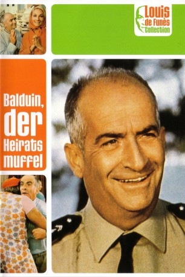

#4768 Balduin, der Heiratsmuffel
 
 IMDB-Wertung: 6.8 / 10
IMDB-Wertung: 6.8 / 10  Metascore: 0
Metascore: 0 
Cruchot verliebt sich in die Polizistenwitwe Josepha. Um sie zu beeindrucken, macht er sich wesentlich jünger, als er eigentlich ist, und verheimlicht ihr das wahre Alter seiner erwachsenen Tochter Nicole. Die ist davon natürlich alles andere als begeistert. Schließlich macht auch noch Cruchots Rivale Gerber seiner Flamme schöne Augen.
Jahr: 1968
Dauer: 89 Minuten
FSK: 6
Land: Frankreich Studio: Constantin FilmTonspuren:
Untertitel:
Auflösung: 1080p (1920x816) Größe: 6512 MB
Genre: Komödie
Regisseur: Jean Girault
Drehbuch: Ernest Hemingway
Soundtrack:
Darsteller:
 Louis de Funès als Maréchal des Logis-chef Ludovic Cruchot
Louis de Funès als Maréchal des Logis-chef Ludovic Cruchot Jean Lefebvre als Maréchal des Logis Lucien Fougasse
Jean Lefebvre als Maréchal des Logis Lucien Fougasse Michel Galabru als Adjudant Jérôme Gerber
Michel Galabru als Adjudant Jérôme Gerber- Nicole Garcia als La jeune fille verbalisée
- Geneviève Grad als Nicole Cruchot
- Christian Marin als Maréchal des Logis Albert Merlot
- Yves Vincent als Le colonel
- Guy Grosso als Maréchal des Logis Berlicot
 Michel Modo als Maréchal des Logis Tricard
Michel Modo als Maréchal des Logis Tricard- Maurizio Bonuglia als L'ami de Nicole / Nicole's Fiance
- Mario David als Le malfrat
 Claude Gensac als Josépha Cruchot
Claude Gensac als Josépha Cruchot- Nicole Vervil als Mme Gerber
- France Rumilly als La religieuse
- Guy Verda als
- Jean-Pierre Bertrand als Eddie
- Claude Bertrand als Poussin Bleu
- Henri Guégan als
- René Berthier als Berthier, l'adjoint du colonel
- Jean Ozenne als Le prefet à la comission de suspension de permis
- Robert Destain als Le commandant
- Rudy Lenoir als Un candidat adjudant à l'examen
- Dominique Zardi als Un candidat adjudant à l'examen
- Bernard Lavalette als Le professeur de danse
 Dominique Davray als La femme du professeur de danse
Dominique Davray als La femme du professeur de danse- Yves Barsacq als L'automobiliste qui rentre dans Cruchot , uncredited
- Jackie Blanchot als (uncredited
- Jerry Calà als (uncredited
- Tove Frisch als Une jeune fille / Young girl , uncredited
- Patrizia Giammei als (uncredited
- Jack Romolli als (uncredited
- Karin Skarreso als (uncredited
- André Tomasi als L'homme au tracteur , uncredited
Datei: X:\Person\Louis de Funès\Balduin, der Heiratsmuffel (1968, FSK6, 1920x816).mkv seit 15.11.2016
Festplatte: HD Collection-7+mehr(A-Z)+Person
 Es gibt insgesamt 33 Filme in der Gruppe 'Person\Louis de Funès'
Es gibt insgesamt 33 Filme in der Gruppe 'Person\Louis de Funès'